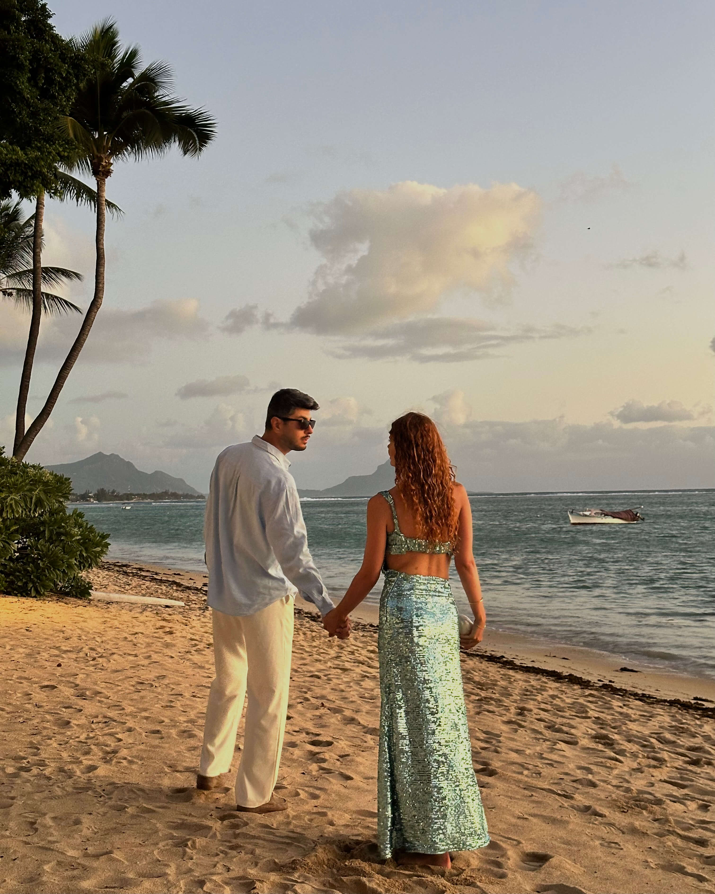
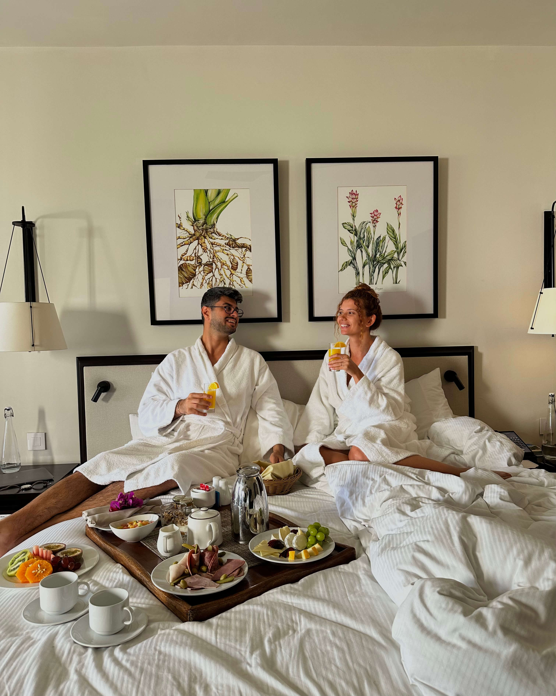
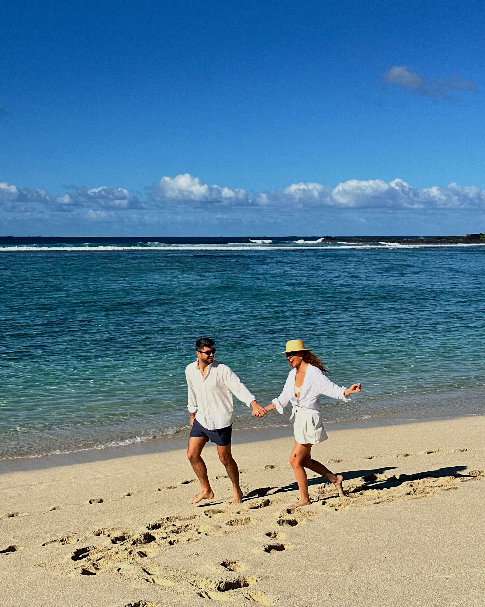

Ayça & Kerem · Yaratıcı Stüdyo
İnsanlar yalnızca bir otel rezervasyonu yapmaz.Kendilerini o hikayenin içinde hayal eder.
Oteller, destinasyonlar, restoranlar ve yaşam tarzı markaları için hissi merkeze alan sinematik içerikler üretiyoruz.
Biz Kimiz?
Biz içerik üretmiyoruz.Deneyimleri hikayeye dönüştürüyoruz.
Her otelin, her destinasyonun ve her markanın kendine özgü bir hikayesi olduğuna inanıyoruz. Bu yüzden yalnızca güzel görüntüler çekmiyor; insanların kendilerini o deneyimin içinde hayal edebileceği içerikler üretiyoruz.
Doğal çift dinamiğimiz, sinematik anlatımımız ve detaylara verdiğimiz önemle markaların sosyal medya, reklam ve web kanallarında uzun süre kullanabileceği güçlü bir içerik arşivi oluşturuyoruz.



Yaratıcı Yönetim
Prodüksiyon
Hikaye Anlatımı
Markalara Nasıl Değer Katıyoruz?
Yalnızca içerik değil,kullanılabilir bir marka varlığı üretiyoruz.
Hikaye Anlatımı Odaklı Videolar
Markanızın atmosferini yalnızca göstermek değil, izleyiciye hissettirmek için üretiyoruz.
Doğal ve Güven Veren Marka İçeriği
Marka kanallarında, reklam kampanyalarında ve sosyal medyada kullanılabilecek samimi içerikler hazırlıyoruz.
Profesyonel Fotoğraf Arşivi
Sosyal medya, web sitesi ve rezervasyon platformları için uzun süre kullanılabilecek görseller üretiyoruz.
Uzun Vadeli İçerik Partnerliği
Tek seferlik bir paylaşım yerine markanızın farklı iletişim ihtiyaçlarına cevap veren sürdürülebilir üretim sağlıyoruz.
Çalışma Modelleri
İçerik üretimi ve doğru kanalda yayın gücü.
Markanız için Türkçe veya İngilizce UGC üretiyor; global çift kanalımız @aycandkerem üzerinde İngilizce hikayeler yayınlıyoruz.
İçerik + Global Yayın
Starter
Tek bir marka içeriğini global görünürlükle birleştiren başlangıç paketi.
- Markanız için 2 UGC videosu (seslendirmesiz)
- 5 profesyonel UGC fotoğraf arşivi
- Videolar için 1 revizyon hakkı
- 12 ay organik kullanım
İçerik Arşivi + Global Yayın
Signature
Çok formatlı içerik arşivi ve global kanalımızda görünürlük.
- Markanız için 3 UGC videosu
- Sinematik, trend veya seslendirmeli plan
- 10 profesyonel UGC fotoğraf arşivi
- Videolar için 2 revizyon hakkı
- 12 ay organik kullanım
Size Özel
Custom
Kampanyaya özel kapsam, yayın kanalı ve kullanım hakları.
- Özel UGC ve fotoğraf prodüksiyonu
- Konuşmalı veya seslendirmeli içerik
- Creator yayını, reklam ve whitelisting
- Çok lokasyonlu veya çok günlük çekim
- Reklam, genişletilmiş kullanım ve ham dosya seçenekleri
- @kkargin_ veya @heysirenas hesaplarında yayın seçeneği
@aycandkerem içerikleri daima İngilizcedir. Markaya teslim edilen UGC, Türkçe veya İngilizce üretilebilir.
Paketlere dahil revize sayısı paket içeriğinde belirtilmiştir. Yeni senaryo, sonradan eklenen seslendirme, farklı kurgu veya ek çekim ayrıca fiyatlandırılır.
12 ay organik sosyal medya kullanımı dahildir. Reklam, whitelisting, süresiz kullanım ve ham dosyalar ayrıca planlanır.
Türkçe Creator Yayını
@kkargin_ · @heysirenas
Türkçe creator paylaşımları, projenin hedef kitlesine göre yalnızca Custom kapsamında ayrıca değerlendirilir.
Her teklif; teslim sayısı, dil, yayın kanalı ve kullanım süresi netleştirildikten sonra kapsamlandırılır.
Referanslar
Birlikte hikayeler ürettiğimiz markalar.
Otellerden destinasyonlara, restoranlardan global markalara uzanan iş birlikleri.
 Hilton Mauritius Resort & Spa
Hilton Mauritius Resort & Spa Anatotour
Anatotour Le Chateau de Bel Ombre
Le Chateau de Bel Ombre Heritage Resorts
Heritage Resorts Mark Ryden Türkiye
Mark Ryden Türkiye Hotel Meandro
Hotel Meandro Pizzeria Rössl
Pizzeria Rössl Castel Sallegg
Castel Sallegg Glarros Old Town Hotel
Glarros Old Town Hotel Iasamani Restaurant
Iasamani Restaurant Apart.In Hotel Tbilisi
Apart.In Hotel Tbilisi Valluga Hotel
Valluga Hotel Hotel Tradizio
Hotel Tradizio InterContinental Istanbul
InterContinental Istanbul Altunizade Suites Istanbul
Altunizade Suites Istanbul Alden Hotel Cappadocia
Alden Hotel Cappadocia GetYourGuide
GetYourGuide B&B HOTEL Paris
B&B HOTEL Paris Canela Cave Hotel
Canela Cave Hotel Beyaz Bahçe Hotel & Restaurant
Beyaz Bahçe Hotel & RestaurantBirlikte Çalışalım
Bir sonraki hikayeyi birlikte anlatalım.
Oteliniz, restoranınız veya markanız için uzun süre kullanabileceğiniz sinematik içerikler üretelim.
aycandkerem@gmail.com